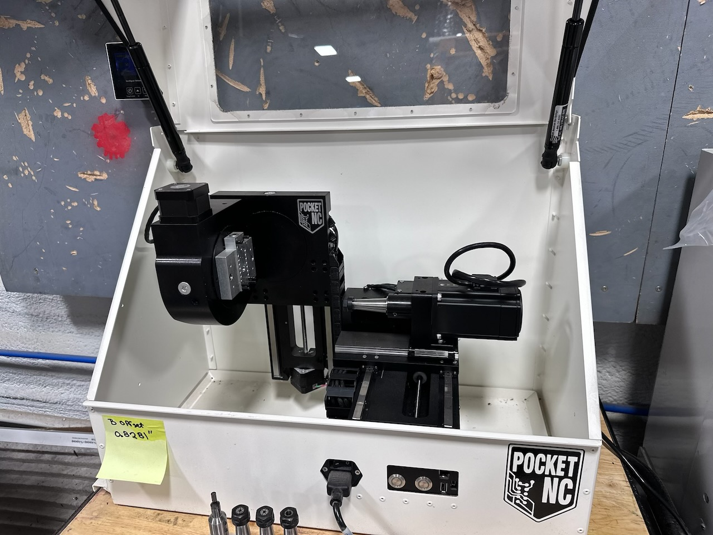
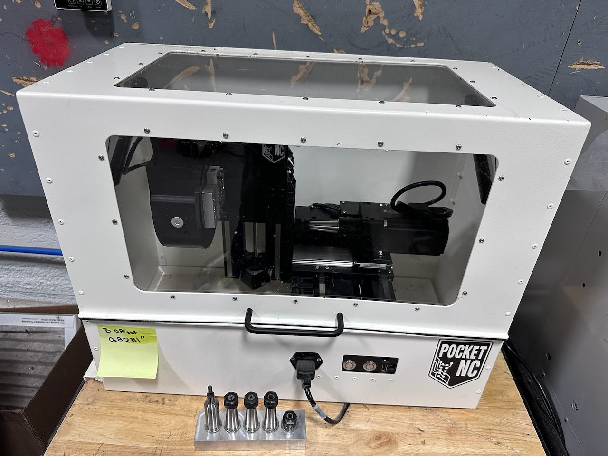
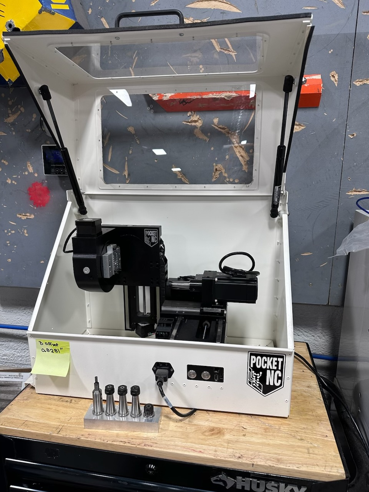
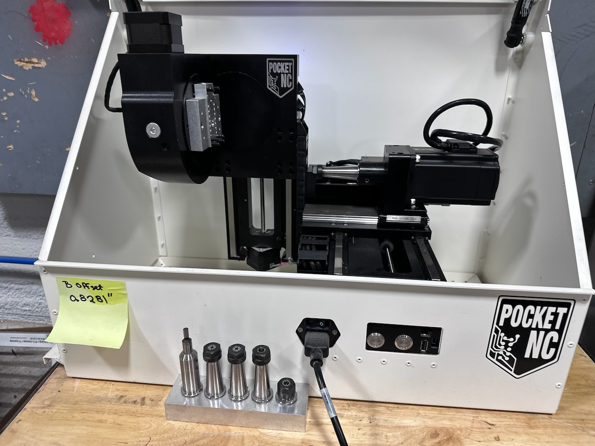
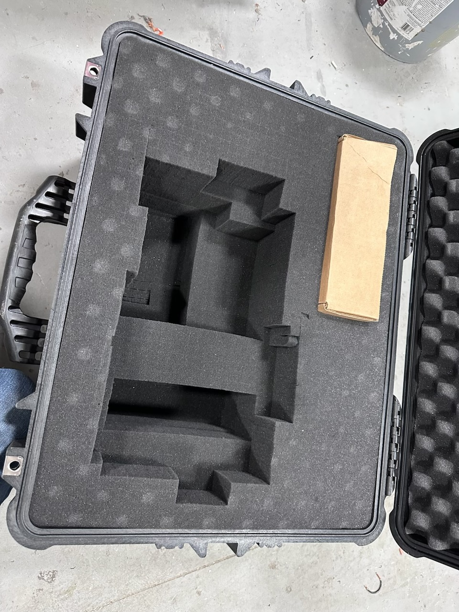
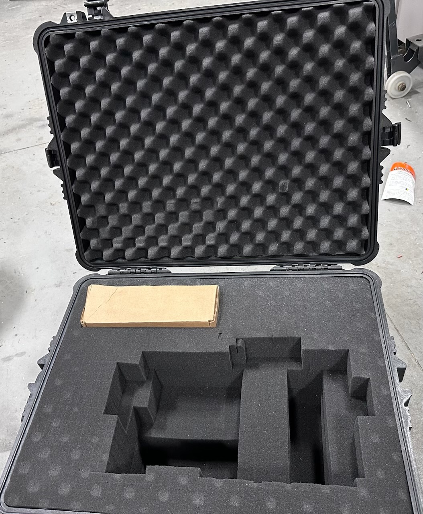
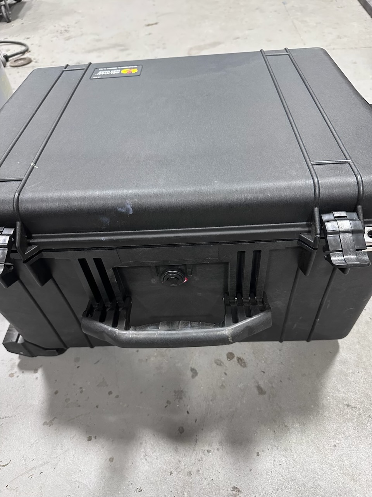
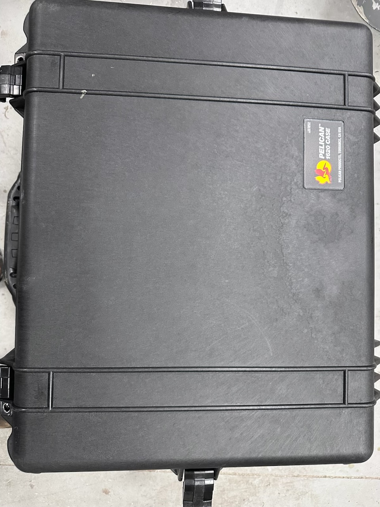
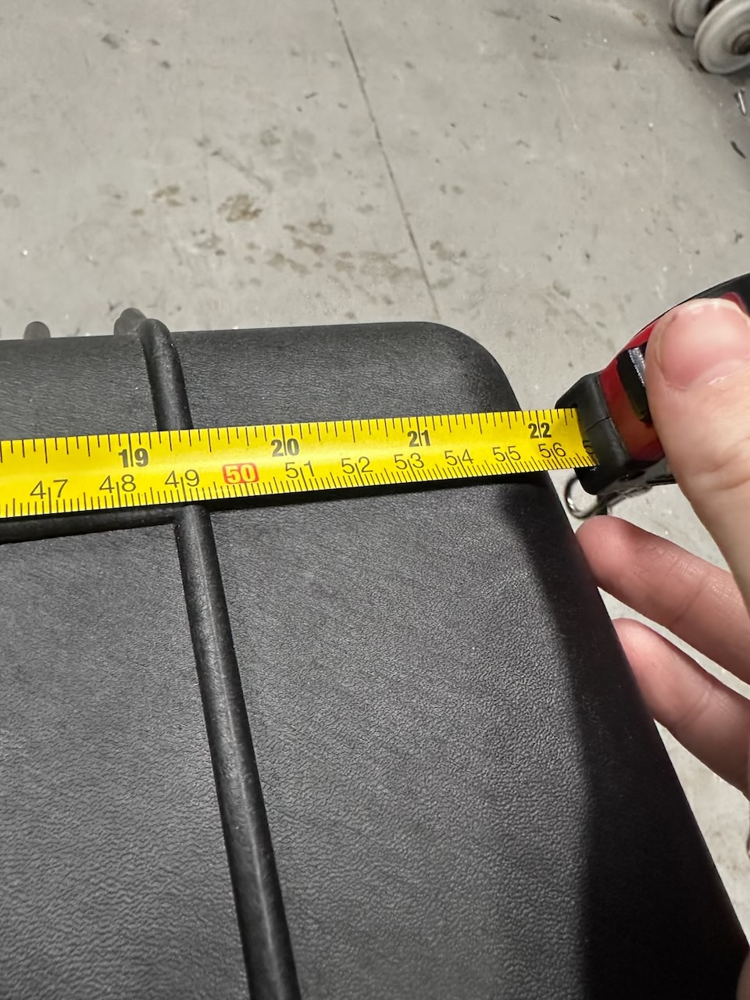
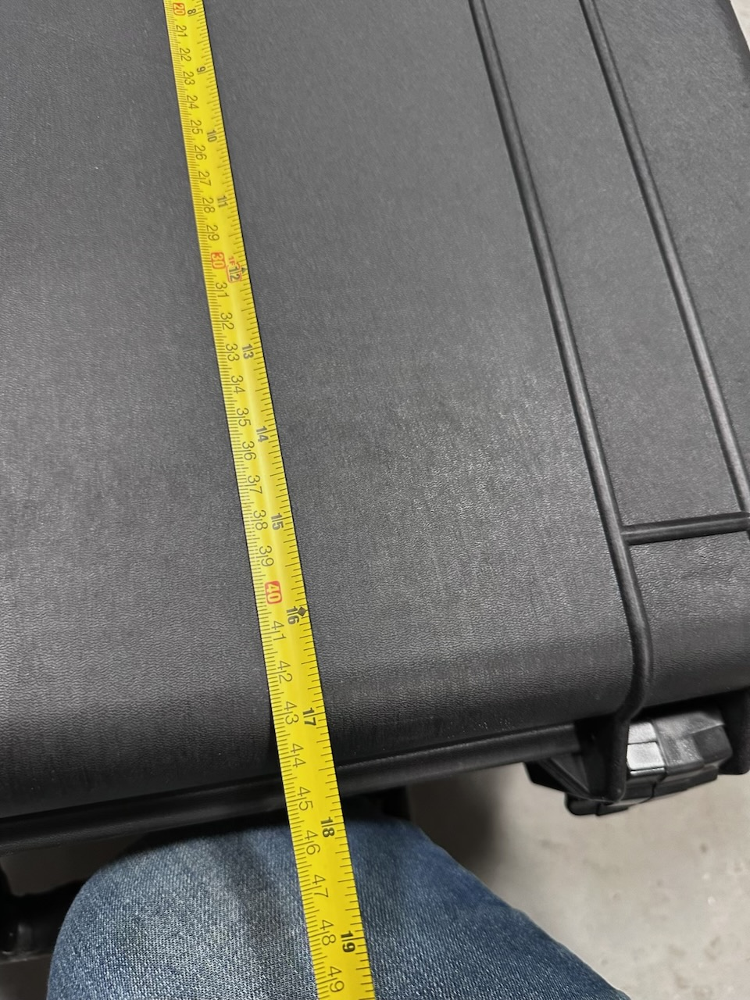

PocketNC V2-10 Five-Axis Desktop CNC










Up for sale is a PocketNC V2-10 five-axis desktop CNC in like-new condition with very few hours of use. This is a professional-grade machine used in engineering firms, machine shops, aerospace, medical device, and R&D environments — not a hobbyist toy. True simultaneous 5-axis capability (A & B rotary plus X, Y, Z linear) in a compact desktop footprint, designed and manufactured in the USA.
Comes complete with the factory enclosure and a custom-fit Pelican hard case — ready to move, store, or ship. Runs standard G-code and is compatible with Fusion 360, FreeCAD, and other common CAM packages.
- ✓ PocketNC V2-10 five-axis CNC machine
- ✓ Factory enclosure
- ✓ Custom-fit Pelican hard case
| Axes | 5-axis simultaneous (X, Y, Z + A & B rotary) |
| Spindle speed | Up to 10,000 RPM |
| Materials | Aluminum, brass, plastics, wax, light steel |
| Control | Standard G-code |
| CAM compatibility | Fusion 360, FreeCAD, and others |
| Origin | Designed & manufactured in USA (Montana) |
| Condition | Like new — very few hours |
Like new — very few hours of use, clean and well maintained throughout.
- Like new — very few hours
- Machine and enclosure in excellent condition
- Pelican case included and in good condition
- No known issues — fully operational
Complete the short form below to receive our contact information and pickup address.